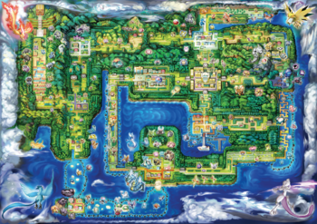
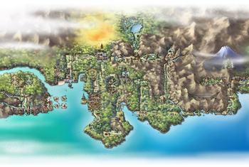
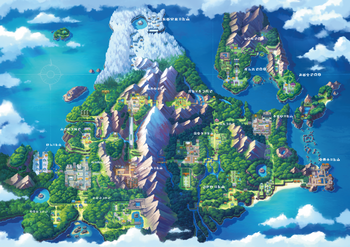
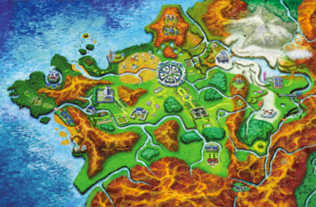

Regiões do Mundo Pokémon
O mundo Pokémon é composto por diversas regiões. Veja em quais delas você pode encontrar a Eevee!
As quatro regiões principais
Cada região trouxe novidades para a família Eevee.
-

Kanto
Região original dos jogos Pokémon Red e Blue (1996). Eevee pode ser encontrada em Celadópolis.
-

Johto
Região dos jogos Gold e Silver (1999). Espeon e Umbreon foram introduzidas aqui.
-

Sinnoh
Região dos jogos Diamond e Pearl (2006). Leafeon e Glaceon foram introduzidas aqui.
-

Kalos
Região dos jogos X e Y (2013). Sylveon foi introduzida aqui.
Onde encontrar Eevee
Localização da Eevee em cada geração de jogos.
-
Red / Blue
Kanto
Celadópolis — presente do NPC
-
Gold / Silver
Johto
Rota 45 — raro em árvores
-
Diamond / Pearl
Sinnoh
Aldeia Ternua — presente da Bela
-
X / Y
Kalos
Cidade Acqua — presente do NPC
-
Sword / Shield
Galar
Rota 4 — encontro aleatório
-
Scarlet / Violet
Paldea
Várias localidades